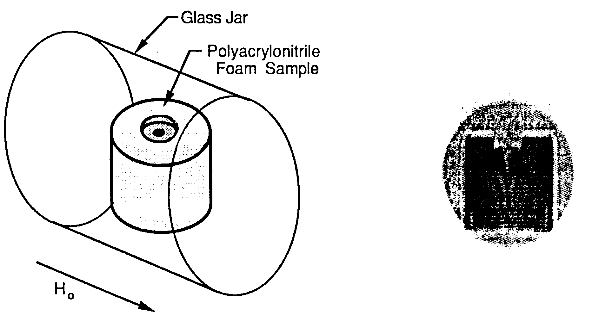

Imaging of Solid Polymeric Foams
Dear Dr. Shapiro,
We have been attempting to characterize the shape of low density glassy polymeric foams by NMR imaging techniques. Since conventional imaging methods are not appropriate for these rigid materials, we have been evaluating alternate approaches. One technique is to immerse the foam in water and image the density of the water. This technique does not appear promising for very low density foams. For example, for a 0.05 g/cc foam one would need to accurately resolve the difference between 0.95 and 1.00 g/cc of water. We are presently exploring the potential of imaging foams by exposing them to a low vapor pressure gas with a high hydrogen content and then imaging the location of these hydrogens, which are relatively mobile. We expected that the gas concentration would be proportional to the foam density. Our initial results and subsequent calculations show that we are imaging gas molecules adsorbed on the foam surface and thus are imaging the surface area of the foam.
Figure 1 shows the geometrical arrangement of the experiment. A polyacrylonitrile foam sample with a density of 0.12 g/cc had a diameter of 4.4 cm and a length of 4.0 cm. A 1.5 cm depression was molded in the top of the sample in addition to an inverted conical cavity. The sample was placed in a glass jar and exposed to butane gas at ambient pressure. After approximately 20 minutes of exposure, the jar was sealed and placed in the horizontal bore of a spectrometer described previously [1]. Figure 2 shows the resulting image using a conventional 2-dimensional Fourier imaging pulse sequence [2]. The external shape of the foam has been reasonably reproduced by the imaging process. The somewhat larger circle of intensity intermediate to that of the foam sample and the background corresponds to the free butane gas in the glass jar.

| Figure 1. The geometric arrangement of the sample cell. | Figure 2. 2-dimensional image of the polyacrylonitrile foam sample |
We have analyzed the butane signal intensity from a series of polyacrylonitrile foams with densities of 0.04, 0.08 and 0.16 g/cc. We found that the butane signal intensities for these three foams were proportional to the surface areas of the foams as determined by BET measurements. We were also able to show that each butane molecule is associated with approximately 30 A2 of surface area. The molar volume of liquid butane to the 2~3 power, a first-order approximation to the cross sectional area of a butane molecule, is also equal to 30 A2. We interpret these observations to mean that monolayer adsorption rather than absorption is the primary interaction between the butane and the foam sample. Thus, we are imaging the surface area contours of the sample. This method is being investigated as a tool for examining internal defects in foam material.
Sincerely,
| Roger A. Assink Sandia National Laboratories Albuquerque, NM 87185 |
Arvind Caprihan Lovelace Medical Foundation Albuquerque, NM 87108 |
Please credit this contribution to the account of P. Cahill
REFERENCES
[1] R. A. Assink, A. Caprihan and E. Fukushima, AIChE Journal ~4, 2077 (1988).
[2] P. G. Morris, Nuclear Magnetic Resonance Imaging in Medicine and Biology, Oxford, Clarendon (1986).